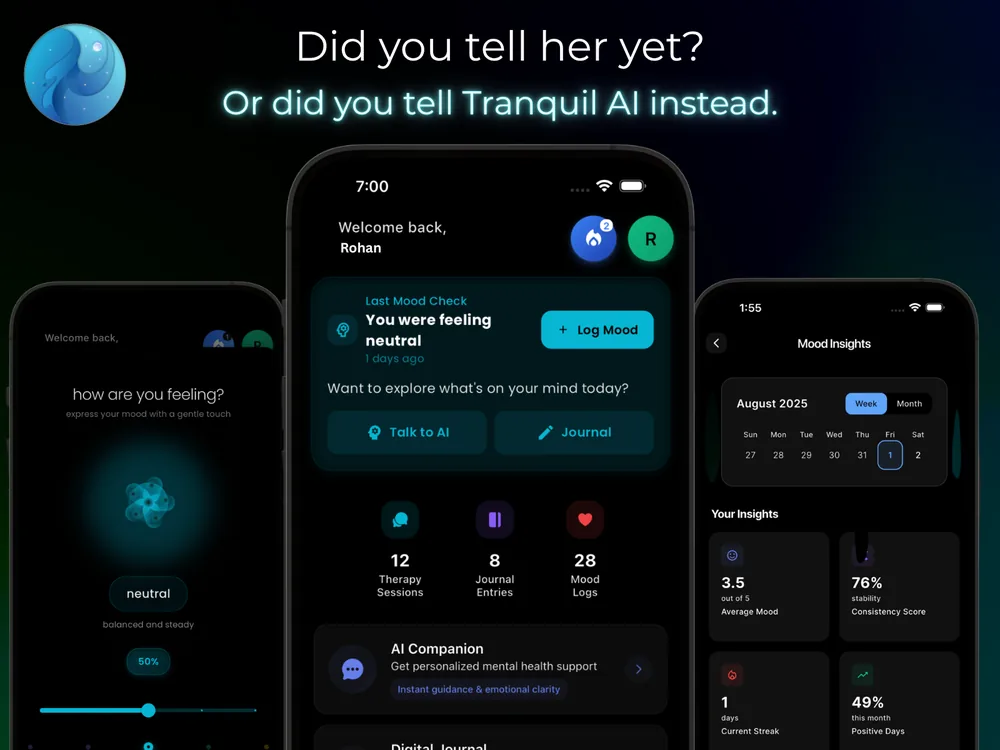
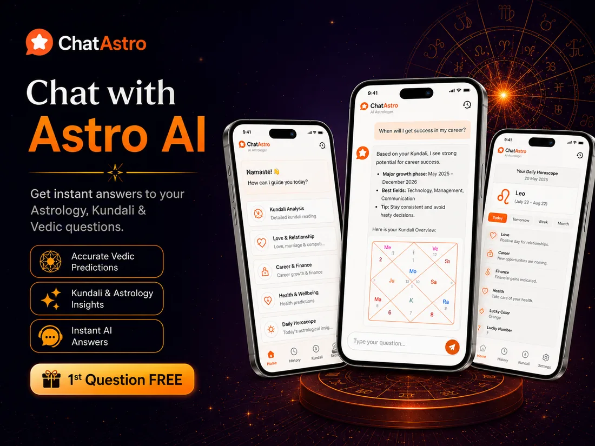
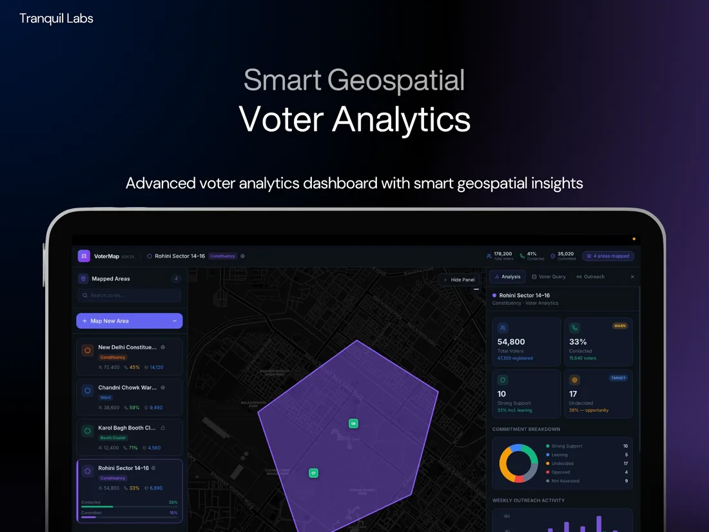
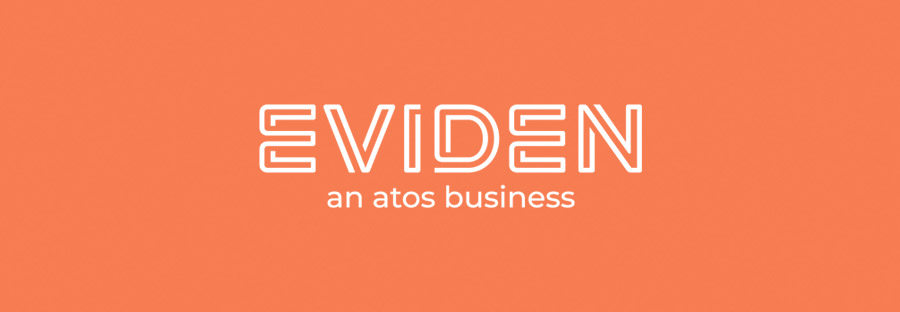
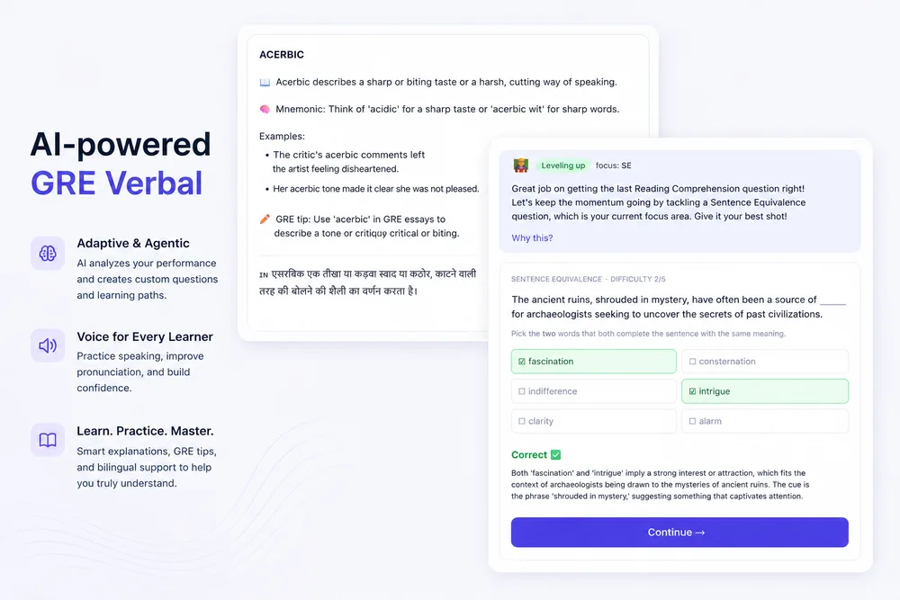

Tranquil is an AI companion that helps people navigate emotions, build resilience, and feel heard, any time, anywhere.
I built it end to end: a pipeline with cross-session memory (so it remembers your journal and mood history), CBT-based tracking, real-time voice-to-voice conversation over WebRTC, and personalised nudges that meet people where they are.
I also built Parichay, an adaptive intake flow that profiles a new client through conversation and matches them to the right therapist, handing the therapist a structured summary before the first session even starts.
Tranquil was recognised as a Top 10 student startup in India by NASSCOM & Cisco, secured a ₹5L seed grant, and was showcased at Startup Mahakumbh and the India AI Summit.

ChatAstro is an AI astrology app that turns the daily sky into something personal. The interesting engineering is the proactive insight engine: it batches users’ birth charts against the day’s planetary events, groups people by shared transits so the system isn’t making redundant LLM calls for everyone individually, and scores each insight for significance before deciding whether it’s worth a push notification. The result is timely, personal nudges at a fraction of the naive cost.

A survey and field-operations platform built and deployed for the 2026 Kerala Assembly Elections. The core challenge was access control at scale: I implemented a five-tier role hierarchy (super admin → party admin → constituency admin → booth manager → volunteer) so thousands of field users could profile voters and manage booths with exactly the permissions their role allowed, and nothing more.


An adaptive GRE Verbal coach. A LangGraph agent reads each attempt and decides whether to re-teach a concept, dial difficulty up or down, or target the student’s weakest skill across Text Completion, Sentence Equivalence, and Reading Comprehension.
Underneath sits the harder infrastructure: Elo-based skill rating, LLM error-tagging, and a generate / validate / critique item-generation pipeline, all guarded by a 6-suite eval harness. Built on FastAPI, Postgres, Redis, and ChromaDB, with an MCP server wrapping Sarvam’s STT, TTS, and translation APIs.
I built a federated learning system that trains mental-health diagnostic models across many devices without raw, sensitive data ever leaving the user’s phone. On-device training, differential privacy (ε ≤ 1.0), secure aggregation, and homomorphic encryption together reached 83.5% diagnostic accuracy while keeping patient records local.
Membership-inference attacks stayed near the 50% random-guess baseline, so the model retained a strong diagnostic signal with formal privacy guarantees intact.
The work was filed as a patent through VIT and published by the Indian Patent Office in January 2026.